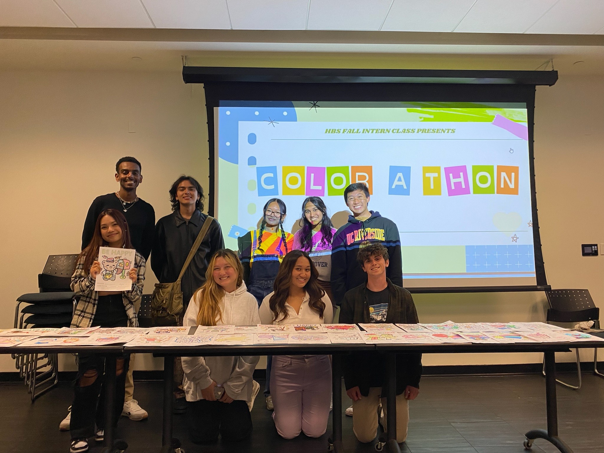
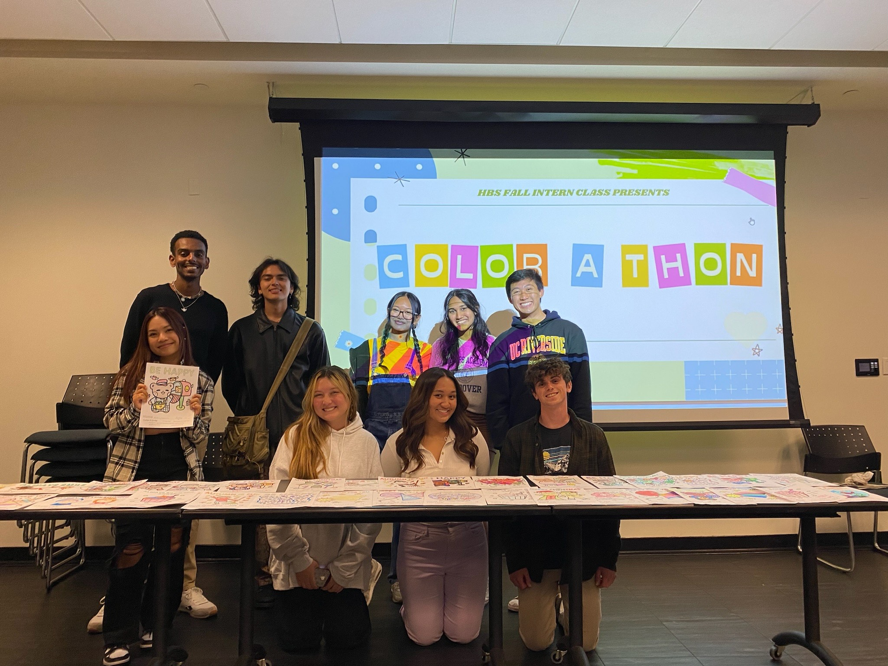
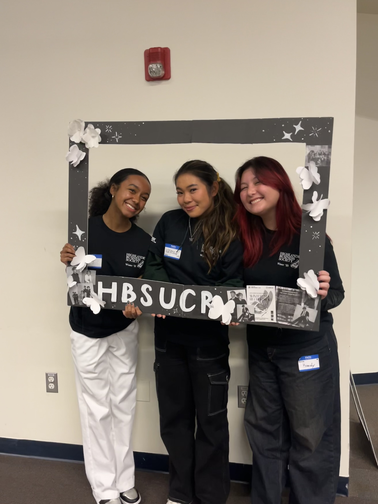
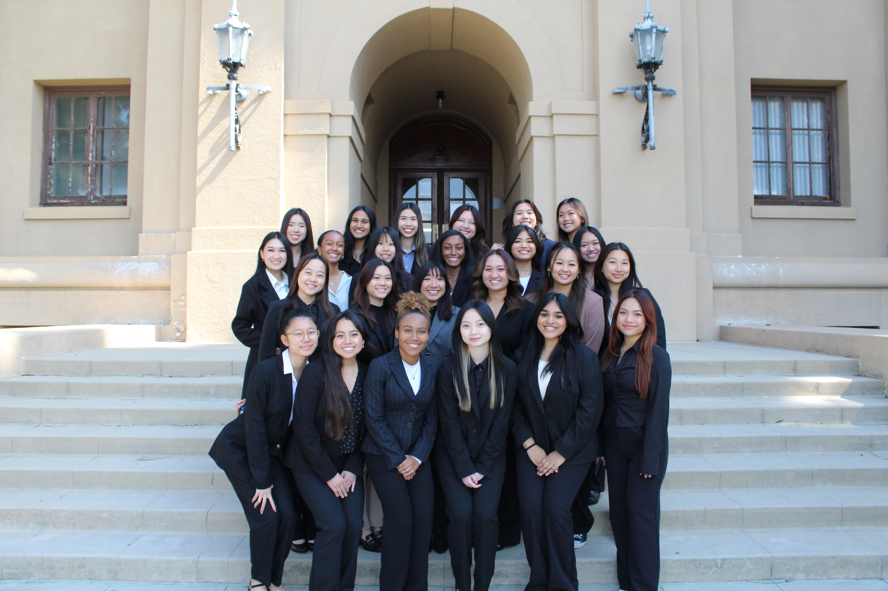
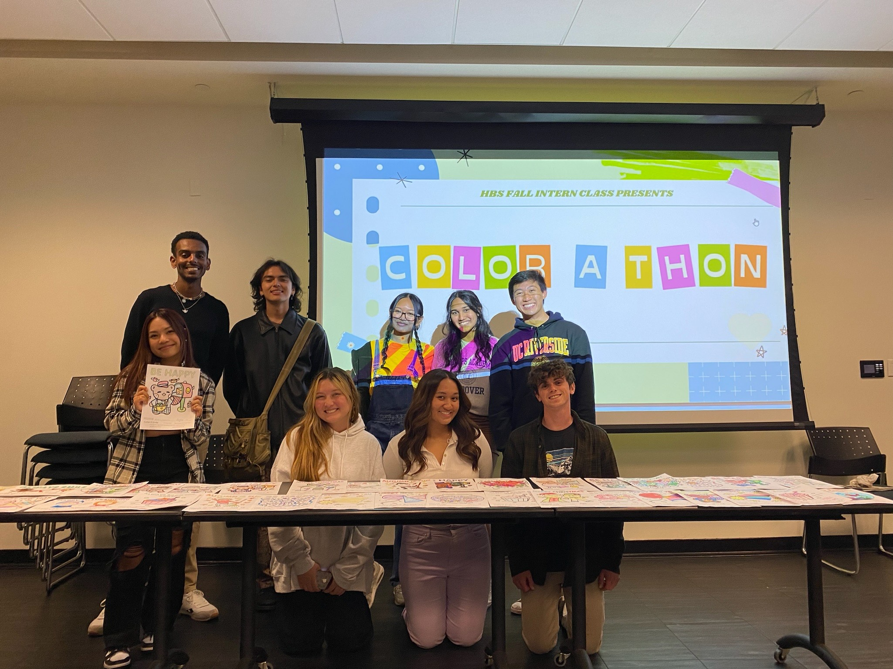
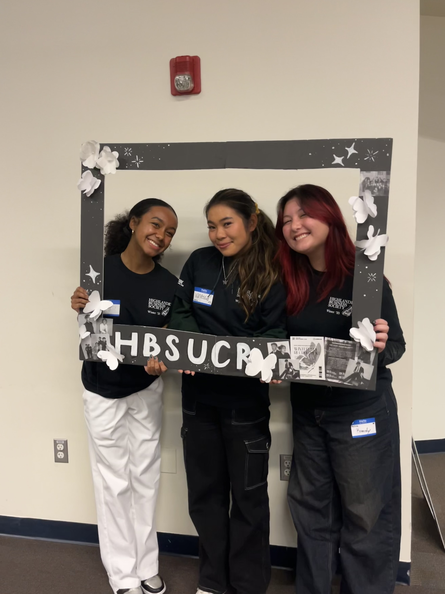
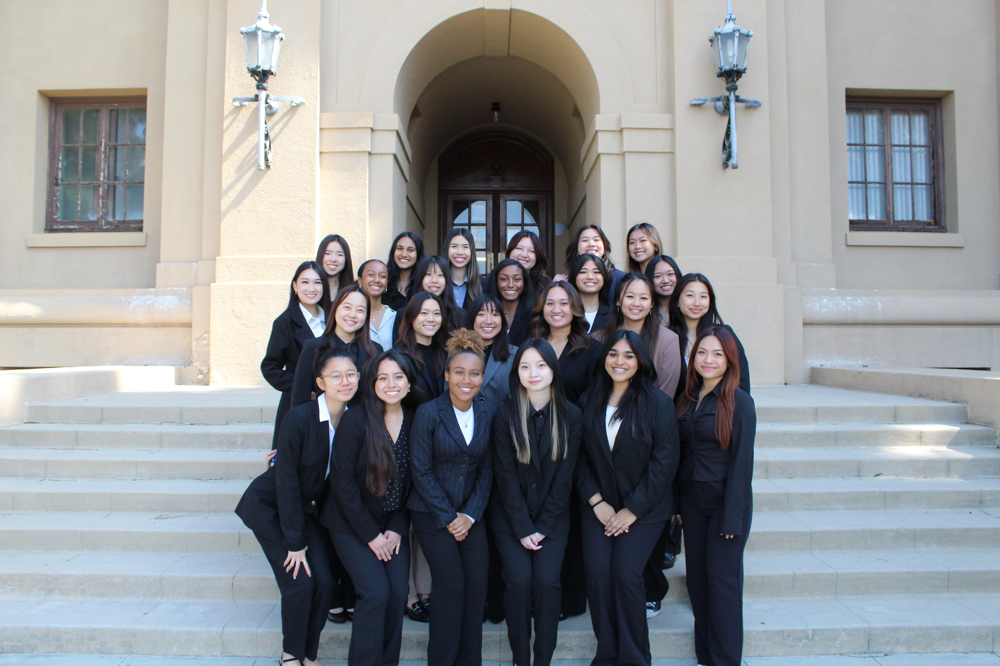

Kennedy Parker
Kennedy Parker is an innovative, creative, and motivated Business Administration student at the University of California Riverside. As a first year, she plans to eventually concentrate on Marketing and expand her capabilities and skills within the Marketing and Business world. As Marketing has a vast amount of possibilities and different areas to work in, she is open to exploring everything from social media to product marketing. Kennedy is open-minded and a fast learner. In the past, she has held various different positions in organizations ranging from international-level clubs to local high school clubs. Most notably where positions in the California-Nevada-Hawaii District of Key Club International, in which she held the positions of Lieutenant Governor, Kiwanis Family and Foundation Committee Secretary, and Division News Editor. All of these positions trained her for college and to be able to be a confident leader and manage teams of people ranging from 10 to 50 individuals. Furthermore, at the University of California, Riverside, she involves herself primarily in the professional business organization named Highlander Business Society. With experience as her Intern Class Secretary and Program Coordinator on the Vice President of Education’s Committee in the club, she has been able to extend her experience and professional skills. In the future, Kennedy hopes to work for a company that aligns with her personal interests and passions. Most notably, her passions lie in the automotive industry, fashion industry, and beauty industry. By combining her passions and her work she believes that she can prosper when surrounded by the things that she loves and enjoys. Marketing particularly intrigues Kennedy as marketing is a fascinating and dynamic field that plays a crucial role in the success of businesses and the satisfaction of customers. Working in a team, analyzing trends and company data, and working with visual art are all within Kennedy’s forte. With past experiences that all require teamwork and graphic design skills, Marketing allows for her skills to flourish and expand. Kennedy is most proud of her creativity. Why is creativity so important? Creativity helps your brand and marketing efforts stand out from the competition. It allows you to differentiate your products or services by presenting them in a unique and compelling way. Creative marketing can help capture the attention of your target audience and leave a lasting impression. Additionally, creativity is a powerful tool to engage and captivate your audience. Creative marketing campaigns tend to be more memorable and generate stronger emotional connections with consumers. By evoking emotions and sparking interest, you can increase engagement, encourage interaction, and ultimately drive conversions. Marketing also involves solving problems or addressing customers' needs. Creativity enables you to approach challenges from fresh perspectives, think outside the box, and find innovative solutions. By combining creativity with strategic thinking, you can develop unique marketing strategies that effectively solve problems and meet customer demands. Furthermore, the marketing landscape is constantly evolving, and consumer preferences change rapidly. Creativity allows you to adapt to these changes and stay ahead of the curve. By being creative, you can experiment with new ideas, formats, and platforms, ensuring that your marketing efforts remain fresh, relevant, and appealing to your target audience. All of these encompass Kennedy’s capabilities and beliefs, and in future endeavors she hopes to secure an internship within marketing that will help propel her career further.
Experience
Lieutenant Governor
• Managed a leadership team of assistants, editors, and coordinators to execute events and train 50 officers
• Coordinated monthly council meetings and three various training conferences with up to 250 attendees
• Empowered and trained 12 clubs at high schools in Vista, Oceanside, Carlsbad, and Encinitas
Club President
• Curated presentations and invited non-profit guest speakers to educate students on areas of environmentalism
• Delegated research, flyers, notes, and tasks to an officer team of 5 students to carry out events and activities
• Outreached to members 1-on-1 and nurtured a welcoming atmosphere of the club to increase membership
Division News Editor
• Designed newsletters with Google Slides and Photoshop that were uploaded to Issuu and read by ~100 people
• Adhered to strict deadlines every month and created soft deadlines for the 10 Club Editors I oversaw
• Created educational content to help promote student education
Education
UC Riverside
Portfolio
 



 